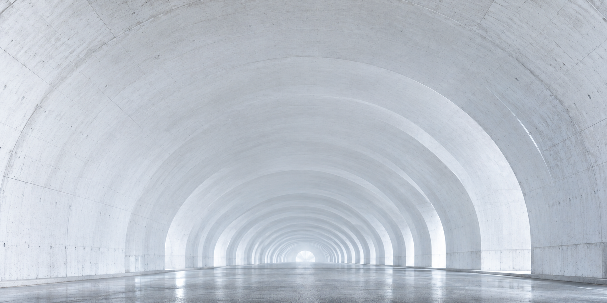

Autonomous scan
Mission-aware flight paths hold repeatable distance, angle and coverage.

Precision that secures critical infrastructure — from first flight to verified decision.
Detecting cracks, deformation and structural risk before they become failure.


A compact airborne platform combines high-density point capture with position-aware imagery. Every flight creates a measurable, repeatable record of the asset.

Survey turbines, corridors and substations with fewer access constraints and a consistent digital record.
Capture bridges, tunnels and transport assets without losing the relationship between a defect and its environment.
Inspect complex facilities while reducing shutdown time, exposure and repeated manual access.
Mission-aware flight paths hold repeatable distance, angle and coverage.
Point clouds, imagery and asset history become one inspectable record.
Teams review anomalies, compare change and prioritize field work.